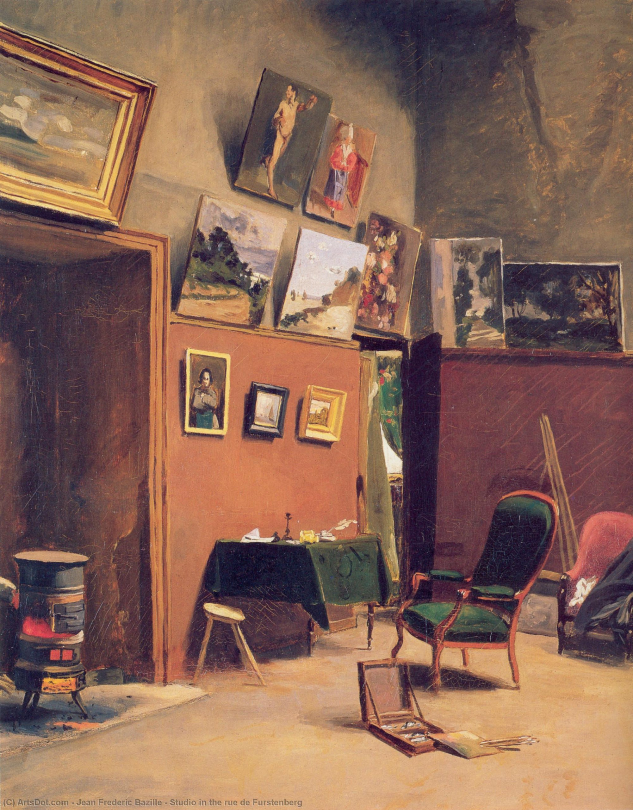

Жан Фредерик Базиль
L’atelier de la rue de Furstenberg (Мастерская художника на улице Фюрстенберг), 1865

Холст, масло, 80 x 65 см
Музей Фабра, Монпелье. В 1985 году картина была приобретена городом Монпелье для музея Фабра при поддержке FRAM Лангедок-Руссильон и любезности семьи Маршан-Линхардт.
История картины
- На картине изображена мастерская Базиля, которую он делил с Клодом Моне с декабря 1864 года по январь 1866 года. Мастерская стала вторым пристанищем Базиля с момента его приезда в Париж. Она располагалась в доме №6 на улице Фюрстенберг, в 6-м округе Парижа. Именно в этой мастерской в 1865 году Моне нарисовал свою картину "Завтрак на траве". По этому же адресу, этажом ниже, находилась мастерская Эжена Делакруа, где он работал с 1857 года вплоть до своей смерти в 1863 году. Возможно, что это соседство повлияло на окончательный выбор художника. Расположенная в самом сердце Сен-Жермен и окружённая дорогими магазинами, мастерская обходилась явно недёшево. Ограниченный в деньгах, Базиль приобрёл кровать с матрасом, шкаф, четыре стула и кресло, которое не раз появится в его портретах. Следуя традиции, мастерская безлюдна, на стенах висят ранние картины друзей-импрессионистов. Причиной, по которой Базиль покинул эту мастерскую в январе, могли стать разногласия по поводу аренды или нежелание соседствовать с Моне.